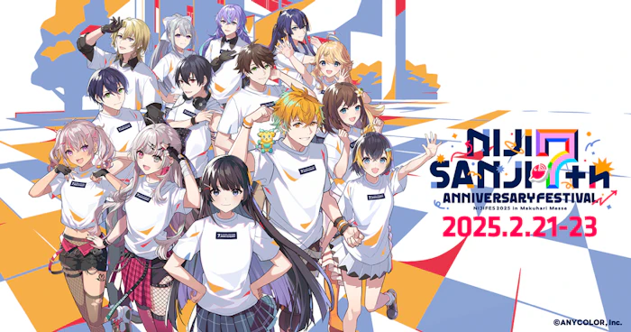
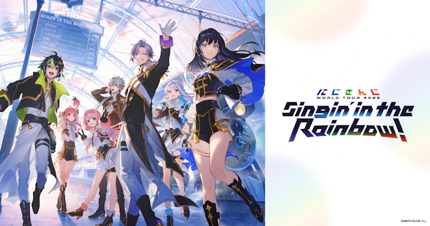

にじさんじとは？
ANYCOLOR株式会社が運営するバーチャルライバー(VTuber)グループで、
名前の由来は「二次元と三次元をつなぐ」という意味から。
現在、約150名の多種多様なライバーが所属しており、
雑談・ゲーム実況・カラオケ配信など様々な内容で毎日誰かしらが生配信を行っている。
(生配信ではなく、動画投稿がメインのライバーもいる。)
音楽ライブをはじめ、様々なイベントが開催されたり、グッズ・デジタルコンテンツの販売、
企業とのタイアップなど彼らの活動は多岐に渡る。


また海外VTuber事業として、
2019年5月に中国VTuberグループ「VirtuReal」、
2021年5月英語圏でのVTuber事業「NIJISANJI EN」が誕生し、始動した。
(なお、2019年7月からインドネシアの「NIJISANJI ID」が、同年12月から韓国の「NIJISANJI KR」が それぞれ始動していたが、
2022年4月15日をもって「にじさんじ」に統合された。)